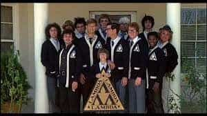

< < < Back
What It’s Like To Be A College Student In 2017 – Return Of Kings
As the readers of ROK know, this country is sick. It’s a sickness that exhibits symptoms such as feminism, with its destruction of healthy gender roles, feigned racism, which gives people a reason to riot and distract the rest of us from real issues, and mainstream trends, not being mainstream because of quality but because of strategic placement for the purposes of mind control. Now I could continue this list of bullshit the left feeds us forever but it would be wiser to find the root of the problem.
Where are these idiots getting all their ideas from? If it is so utterly clear to us that all this crap is a lie to further some agenda, then how are so many becoming brainwashed? The answer is they aren’t living in the real world. They are living in a bubble held outside of reality—a bubble called college.
Why college?
The ages of 18 to 24 are extremely important years in any man or woman’s life. Unlike what popular knowledge tells us, we are really still in an adolescent stage in our early 20s. This final step of maturation is extremely important because it is the time when most people finalize their internal values and beliefs, meaning what they learn to be true in this stage of life will often be the basis for the rest of their lives. Now what, my friends, is so strategically placed in this time period of a person’s life? College.

The red region, the frontal cortex, is the last area of the brain to develop and is responsible for personal values and reasoning.
How it happened
Universities were not always designed to turn us into mindless zombies reliant on the state, but at some point (I imagine early 20th century) liberals invaded the college system and methodically removed all other professors and officials with differing viewpoints. They did this because they knew that if they pushed their agenda in this particular time portion of a person’s life they would have a lot more people voting for them, and their ideals would eventually become mainstream. They achieved this victory in the 1960s with the counterculture movement.
What is college like today?
A common gathering in 2017.
College is hell for anyone with a strong mind that can see through the indoctrination. I don’t know how many relationships I have ruined with women for not agreeing with their nonsense feminist ideals. Every class I go to, there is at least one statement a week about racial and gender inequality (even math). At this point it is basically a religion with the most devout believers receiving A’s while the students less knowledgeable about the liberal propaganda receiving C’s and D’s.
Of course, the upside to this is that since I understand their propaganda I can just bullshit all of my papers and get easy A’s. I once wrote an 8-page paper in my East Asian Civilizations class in two hours with few sources to back up my claims and a crap ton of misspellings, and still received an A because it was about the “treacherous” patriarchy. The unfortunate and truly sad part of all of this is that most people in college just want to make the world a better place.
After high school, in this day and age, very few people receive any life experiences that would shape who they are in any way. Therefore, most kids enter college looking for something to believe in and something to fight against so that they can feel that they did their part in making the world a better place. Well, they find the fight they’re looking for, but they are increasing hatred in this world rather than defeating it.
The greatest example of degeneracy—the cuckternity
Now let me give an example of instance in which these dumbasses have hurt lives. I use to be in a fraternity, a place I thought would be a solace of true masculinity. But no, even these once strong and powerful pillars of masculinity in college have been corrupted. I can name at least five different frats on my campus that have a quota for gay members. Now I really don’t care if someone is gay, but having gay men in a fraternity completely defeats the purpose of one.
Anyway, my fraternity was the leader in total degeneracy as we had five gays, one person considering a sex change, and everyone else, besides me and my close group of friends, were hardcore SJWs. Suffice to say I dubbed my fraternity a cuckternity. Now my cuckternity wasn’t always like this. In fact, my freshman year, we only had a few weirdos and the rest of us were chill guys who helped each other get laid and encouraged each other to become stronger men. All of that went to hell when one of the SJWs in the frat became recruitment chair.
I know what you’re thinking. Why the hell did you guys vote him in? Well, we didn’t. He got the other candidate kicked out by sending a picture of him smoking weed to the national board. We were outraged that he did that to our friend, but there was little we could do. We also didn’t really understand the nature of SJWs and their extreme degeneracy back then. But suffice to say, since we were heavy on seniors, in one year’s time the majority of the fraternity was made up of these weirdos.

Don’t worry milady we’ll save you from all that toxic testosterone!
At that point, there was a new election and they used their degenerate brethren to take all the power. They then passed out resignation letters to our remaining normal members, saying that we weren’t a good fit for the image of the cuckternity. Of course, we tossed them and started planning how to take back our organization, but it was too late. They then started accusing members of bullshit claims like sexual harassment and “mantalk.” Yes, they literally kicked some of my friends out for talking about girls’ asses.
Their claims of “sexual harassment” were usually about guys that came back to the house drunk with their girl. They called it “bordering on statutory rape.” They eventually accused me of this, and since it had happened to my friends, I was ready—I’d already had a lot of girls I know leave videos on my phone saying that it was completely voluntary on their part. I think that just pissed them off more, because with these kind of people a lot of their motivation comes from jealousy. They never get laid so they rationalize that I am a horrible person who forces girls into it.
After several such incidents, they eventually kicked me out for “mantalk,” at which point I became homeless for two weeks as I was living in the house. In total, they kicked 11 members out of the fraternity, 5 of whom had to become homeless or go live with their family. After the incident 20 people decided to just drop the fraternity and they went from 104 members to 72. At least now they are screwed financially.
Conclusion
This story was not to inform you of a series of unfortunate events that happened to just one unlucky fraternity. No, this was to illustrate how fucked up the current state of the United States college system is. In fact, this shouldn’t even surprise you. Even South Park did an episode on PC frats.
What we should learn from all of this is that college is no longer what it used to be. Now I am a believer in higher education, so I don’t think we should stop going en masse, but what we should do is use capitalism to our advantage. Start looking into vocational schools. Start going to private colleges and conservative colleges. Take from them their ultimate source of power—money.
The only reason anyone should go to college today is for engineering, medical school, any kind of scientific research, and skill-based professions. Anything else you learn in college you can learn just as easily on the internet. And as employers begin to figure this out, college as an entire unit will become obsolete.
Read More: Reflections On My Freshman Year Of College